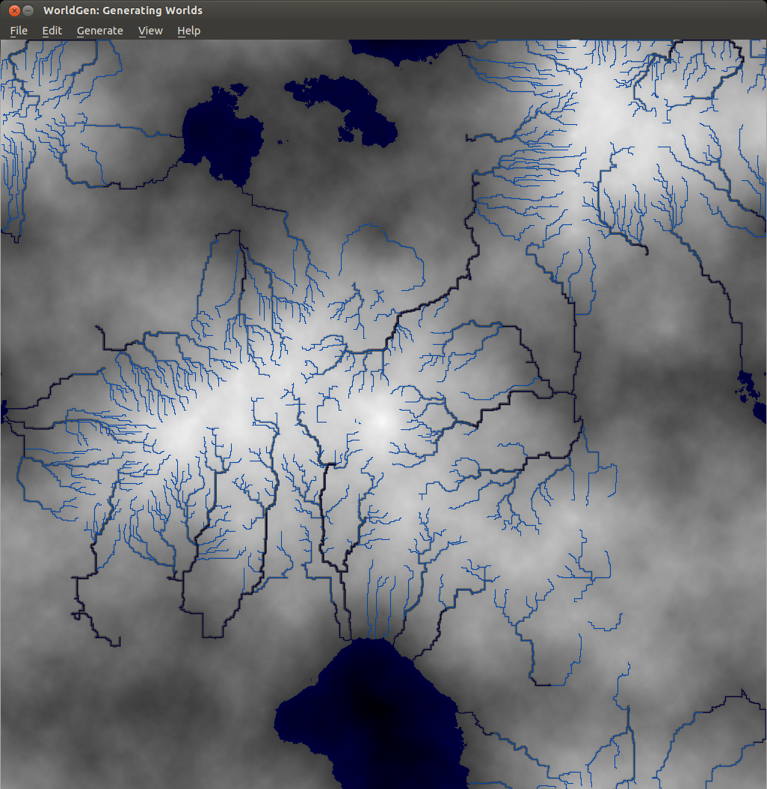

New releases of WorldEngine, OpenMW and TESAnnwyn

WorldEngine 0.19 has been released! In case you’re wondering, WorldEngine is the combination of two projects: Lands and WorldSynth. The biggest gain in the merge is that we’re now two developers on the same wavelength and we’ve added plate tectonic simulations! As things have become more serious and complicated, we’ve had to write tests suites to cover our bases. We’re currently about 86% code coverage and the tests guarantee reproducibility which aids us in finding regressions. We’ve got many contributions, so having these in place are crucial for project stability.
What’s new in WorldEngine 0.19:
- Speed of generation increased by almost a factor of 3 (due to update to Platec and making heavy use of numpy).
- World-generation is now deterministic, i.e. generation is 100% reproducible.
- Added support for exporting heightmaps using libgdal (see http://www.gdal.org/formats_list.html for possible formats).
- Added the ability to modify temperature and humidity ranges as well as the temperature/precipitation curve.
- Added the ability to generate scatter plots showing temperature and humidity of all terrestrial cells.
- Added small variations to the temperature-map based on basic orbital parameters.
- Added a satellite-like view of the world.
- Added support to save/load worlds in/from HDF5-format.
Exposure!
In addition to a new release, Smashing Magazine published an article that I co-authored with Federico titled “Diving Into Procedural Content Generation” which goes into detail about our motivations in creating WorldEngine (originally WorldSynth and Lands) and how by simulating real world phenomenon we can “create” realistic worlds, the results of which have been used by others for their own projects.
Speaking of own projects…
I’ve been a member of OpenMW for a while now and with the recent advances in the OpenMW-CS (construction set), it has made it possible to create your own “game” and not have to rely on Morrowind or any other Bethesda IP. In this particular case, I’ve been working on the OpenMW-Template and OpenMW-Example-Suite. The Template is fully CC-BY 3.0 and can be used by anyone wanting to have something akin to a starter kit or SDK when using OpenMW and its CS. The Example-Suite is OpenMW’s own game using the Template as a basis but going further in demonstrating what the engine can do.
One of the things I’ve been working on is getting height data (DEM) into OpenMW, such as ones created by WorldEngine. Introducing TESAnnwyn, originally open-sourced by Lightwave, I’ve been working to turn it into a library with a CLI and improving it even further by adding features and fixing bugs. The result is that you can use GDAL to convert whatever DEM you might have, into a 32-bit signed raw (ENVI) file that can be read by TESAnnwyn and converted to an ESP full of terrain data! My hope is that one day it will have Python bindings so it can be used directly by OpenMW-CS.
Here is an example of the result of a DEM that was reduced by 50% in terms of resolution and size running in OpenMW with all the setting cranked to max, including view distance.
https://www.youtube.com/watch?v=4LmzpdhNHds
As you can see, we’ve come a long way and many of the projects I’ve been working on are cross pollinating. There is so much left to do! If you’re interested in any of the projects, please feel free to leave a comment and/or help!